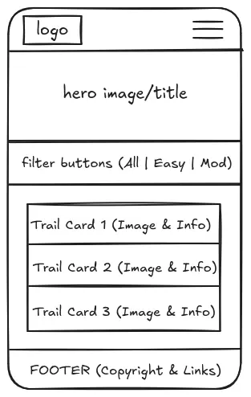
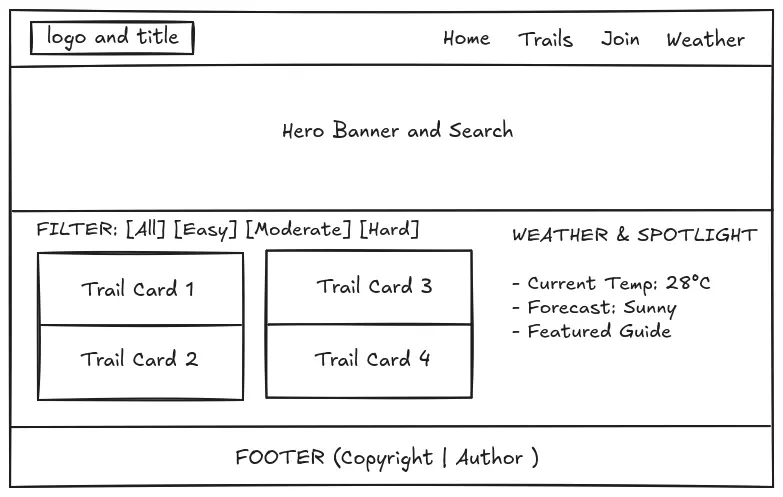

1. Site Name
Proposed Site Name: Negros Oriental Eco-Trails & Adventure Guide
Reasoning: This name directly reflects the site's focus on showcasing eco-friendly hiking trails, waterfalls, and natural landmarks across Negros Oriental (including Dumaguete, Valencia, and Bacong). It establishes an authoritative and inviting tone for local adventurers and eco-tourists.
Optional Domain Availability: negrosecotrails.org
2. Site Purpose
The Negros Oriental Eco-Trails website serves as an interactive outdoor directory. It provides visitors with detailed trail difficulty ratings, elevation maps, packing checklists, guide booking contacts, and real-time weather information. The site features an interactive trail search and filtering engine, local storage for saving favorite routes, and a booking query modal for guided hikes.
3. Target Audience Scenarios
- Scenario 1: "What beginner-to-intermediate hiking trails near Dumaguete or Valencia have waterfall views and clear difficulty ratings?"
- Scenario 2: "How can I filter local hiking routes by elevation and save my favorite trails to view offline?"
- Scenario 3: "Where can I request a licensed local guide for Mt. Talinis or Casaroro Falls?"
4. Color Scheme
The palette reflects the tropical forest and coastal environment of Negros Oriental while guaranteeing high visual contrast (WCAG AAA compliant).
5. Typography
Heading Font: Montserrat (Sans-Serif)
Montserrat Bold (600/700) - Used for all major page headings (H1, H2, H3) and navigation branding.
Body Font: Open Sans (Sans-Serif)
Open Sans Regular (400/600) - Used for general paragraph text, trail descriptions, card metadata, and form fields.
6. Wireframes
Structural layout wireframes for the Home / Landing page across mobile and desktop viewports.
Mobile View (Small Viewport)

Desktop View (Large Viewport)
